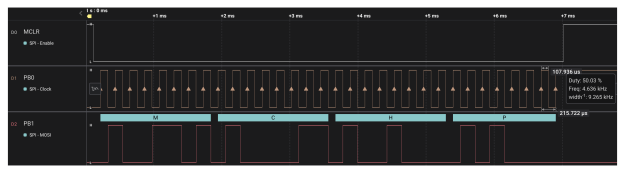

The DFU utility functions can be ported on a given Host MCU to perform the DFU
operations. There are example host MCU code to simulate the DFU utility and perform the
erase and update operations on a given partition.
The DFU pins mentioned in above Table 8-1 are initially used as generic I/O pins to trigger a predefined DFU
pattern. Upon successful DFU pattern the RNWF02 device
will enter the DFU mode where it can perform the erase and write operations.
The DFU pattern is captured and illustrated in the following figure.Figure 8-10. DFU Mode Pattern

Following example provides the DFU pattern generation
code:
After successfully entering the DFU mode, the PB0/DFU_Rx (Pin 26) and PB1/DFU_Tx (Pin 10)
pins will be reconfigured as UART lines with the below configuration:
Baud: 230400
Data: 8 Bits
Parity: None
Stop: 1 Bit
In DFU mode, the RNWF02 module runs a program
executive (PE) firmware which can support following operations:
PE version read
Device ID read
Flash erase
Flash write
These PE operations are triggered using a 4 bytes command frame and response length
depends on the requested operation. The successful entry of the DFU mode is verified by
reading the PE version and Device ID. Following snippet of code can read the PE version
(0x01) and Device ID
(0x29C7x053).
/* PE version of module*/static uint8_t SYS_RNWF_OTA_DfuPeVersion
(
void
)
{
uint32_t data = 0;
uint8_t peVersion = 0;
uint8_t *byteResp = NULL;
data = SYS_RNWF_OTA_PE_CMD_EXEC_VERSION << 16;
data |= 0x1;
SYS_RNWF_OTA_DBG_MSG("Sending PE version request\r\n");
#ifdef DFU_DEBUG
SYS_RNWF_OTA_DBG_MSG("%08x\r\n", (unsignedint)SYS_RNWF_OTA_DfuPeHtonl(data));
#endif
SYS_RNWF_IF_Write((uint8_t *)&data, 4);
byteResp = SYS_RNWF_OTA_PeReadResponse(SYS_RNWF_OTA_MSEC_TO_SEC, 4);
peVersion = byteResp[0];
SYS_RNWF_OTA_DBG_MSG("PE version: %d\r\n\r\n", (unsignedint)peVersion);
return peVersion;
}
/* ChipId of module*/static uint32_t SYS_RNWF_OTA_DfuPeChipID
(
void
)
{
uint32_t data = 0;
uint32_t chipID = 0;
uint8_t *byteResp = NULL;
data = SYS_RNWF_OTA_PE_CMD_GET_DEVICE_ID << 16;
data |= 0x1;
SYS_RNWF_OTA_DBG_MSG("Sending PE chip ID request\r\n");
#ifdef DFU_DEBUG
SYS_RNWF_OTA_DBG_MSG("%08x\r\n", (unsignedint)SYS_RNWF_OTA_DfuPeHtonl(data));
#endif
SYS_RNWF_IF_Write((uint8_t *)&data, 4);
/* Response */
byteResp = SYS_RNWF_OTA_PeReadResponse(SYS_RNWF_OTA_MSEC_TO_SEC, 8);
memcpy(&chipID, byteResp+4, 4);
SYS_RNWF_OTA_DBG_MSG("Chip ID: %08x\r\n\r\n", (unsignedint)chipID);
return chipID;
}
Once the device is in the DFU mode, the device's secured Flash can be erased and Firmware
binary can be written over the UART interface. The erase operation takes the starting
address (0x6000-0000 or 0x600F-0000) and the number of pages of 4096
bytes.
The DFU write operation takes the address, firmware binary and the length of integer
factors of 4096 bytes but not exceeding it. Following is the reference code for
implementing the DFU write
operation.
/* To write to module in DFU mode*/static bool SYS_RNWF_OTA_DfuPeWrite
(
const uint32_t address,
const uint32_t length,
const uint8_t *PE_writeBuffer
)
{
/* The address must be 32-bit aligned, and the number of bytes (length) must be a
multiple of a 32-bit word. */
uint32_t data = 0;
uint32_t checksumValue = 0;
uint8_t *byteResp = NULL;
if (length>(uint16_t)SYS_RNWF_OTA_MAX_PE_WRITE_SIZE)
{
SYS_RNWF_OTA_DBG_MSG("ERROR: Length exceeds SYS_RNWF_OTA_MAX_PE_WRITE_SIZE\r\n");
return false;
}
/* Length should be integer factor of 4096 and divisible by 4 */if ((((uint16_t)SYS_RNWF_OTA_MAX_PE_WRITE_SIZE % length) != (uint16_t)0) || ((length % (uint16_t)4) != (uint16_t)0))
{
SYS_RNWF_OTA_DBG_MSG("ERROR: Length should be integer factor of 4096 and divisible by 4\r\n");
return false;
}
/* Assemble PE write command */
data |= ((uint32_t)0x0000ffff & (uint32_t)SYS_RNWF_OTA_PE_CMD_PGM_CLUSTER_VERIFY) << 16;
data |= (SYS_RNWF_OTA_CFG_METHOD & 0x0000ffff);
#ifdef DFU_DEBUG
SYS_RNWF_OTA_DBG_MSG("ID:\r\n");
SYS_RNWF_OTA_DBG_MSG("%08x\r\n", (unsignedint)SYS_RNWF_OTA_DfuPeHtonl(data));
#endif
while(false != DMAC_ChannelIsBusy(DMAC_CHANNEL_0));
if(false == DMAC_ChannelTransfer(DMAC_CHANNEL_0,(constvoid *) &data, \
(constvoid * ) & (SERCOM0_REGS -> USART_INT.SERCOM_DATA), sizeof(data)))
{
SYS_RNWF_OTA_DBG_MSG("ERROR: DFU write 1\r\n");
}
SYS_RNWF_OTA_DelayUs(SYS_RNWF_OTA_WRITE_DELAY_USEC);
#ifdef DFU_DEBUG
/* Address */
SYS_RNWF_OTA_DBG_MSG("Address:\r\n");
SYS_RNWF_OTA_DBG_MSG("%08x\r\n", (unsignedint)SYS_RNWF_OTA_DfuPeHtonl(address));
#endif
while(false != DMAC_ChannelIsBusy(DMAC_CHANNEL_0));
if(false == DMAC_ChannelTransfer(DMAC_CHANNEL_0, (constvoid*)&address, \
(constvoid * ) & (SERCOM0_REGS -> USART_INT.SERCOM_DATA), sizeof(address)))
{
SYS_RNWF_OTA_DBG_MSG("ERROR: DFU write 2\r\n");
}
SYS_RNWF_OTA_DelayUs(SYS_RNWF_OTA_WRITE_DELAY_USEC);
#ifdef DFU_DEBUG
/* Length */
SYS_RNWF_OTA_DBG_MSG("Length: %d\r\n", (unsignedint)length);
SYS_RNWF_OTA_DBG_MSG("%08x\r\n", (unsignedint)SYS_RNWF_OTA_DfuPeHtonl(length));
#endif
while(false != DMAC_ChannelIsBusy(DMAC_CHANNEL_0));
if(false == DMAC_ChannelTransfer(DMAC_CHANNEL_0,(constvoid*) &length, \
(constvoid * ) & (SERCOM0_REGS -> USART_INT.SERCOM_DATA), sizeof(length)))
{
SYS_RNWF_OTA_DBG_MSG("ERROR: DFU write\r\n");
}
SYS_RNWF_OTA_DelayUs(SYS_RNWF_OTA_WRITE_DELAY_USEC);
/* Checksum */for (uint16_t i=0; i<length; i++)
{
checksumValue += PE_writeBuffer[i];
}
#ifdef DFU_DEBUG
SYS_RNWF_OTA_DBG_MSG("Checksum:\r\n");
SYS_RNWF_OTA_DBG_MSG("%08x\r\n", (unsignedint)SYS_RNWF_OTA_DfuPeHtonl(checksumValue));
#endif
while(false != DMAC_ChannelIsBusy(DMAC_CHANNEL_0));
if(false == DMAC_ChannelTransfer(DMAC_CHANNEL_0,(constvoid*) &checksumValue, \
(constvoid * ) & (SERCOM0_REGS -> USART_INT.SERCOM_DATA), 4))
{
SYS_RNWF_OTA_DBG_MSG("ERROR: DFU write\r\n");
}
SYS_RNWF_OTA_DelayUs(SYS_RNWF_OTA_WRITE_DELAY_USEC);
#ifdef DFU_DEBUG
/* Data */
SYS_RNWF_OTA_DBG_MSG("PE_writeBuffer:\r\n");
#endif
for (uint16_t i=0; i<length; i++)
{
//SYS_RNWF_OTA_DBG_MSG("%02x ", PE_writeBuffer[i]);while(false != DMAC_ChannelIsBusy(DMAC_CHANNEL_0));
if(false == DMAC_ChannelTransfer(DMAC_CHANNEL_0, (constvoid*)&PE_writeBuffer[i], \
(constvoid * ) & (SERCOM0_REGS -> USART_INT.SERCOM_DATA),1))
{
SYS_RNWF_OTA_DBG_MSG("ERROR: DFU write\r\n");
}
SYS_RNWF_OTA_DelayUs(SYS_RNWF_OTA_WRITE_DELAY_USEC);
}
/* Response */
byteResp = SYS_RNWF_OTA_PeReadResponse(SYS_RNWF_OTA_MSEC_TO_SEC, 4);
/* Verify response for errors */if (((char)byteResp[2] != (char)SYS_RNWF_OTA_PE_CMD_PGM_CLUSTER_VERIFY) || ((char)byteResp[0] != (char)0) || ((char)byteResp[1] != (char)0))
{
SYS_RNWF_OTA_DBG_MSG("Error: PE write failed\r\n");
return false;
}
return true;
}
Note:
The OTA service layer implements these functionality to ease the development
of Host Assisted OTA.
For the Host assisted DFU,
the Host side pins must be able to drive the pattern and also reconfigure
the same pins as UART lines using the pin multiplexing options.
Recommendation is to use Microchip’s Microcontrollers as host which can
support this feature by default
The online versions of the documents are provided as a courtesy. Verify all content and data in the device’s PDF documentation found on the device product page.